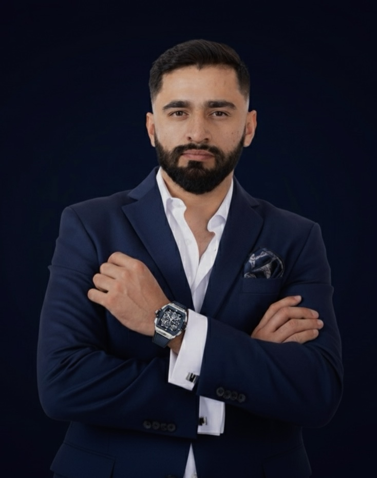

Mi Carrera No Fue Lineal. Fue Una Serie De Decisiones Forzadas Por La Realidad.My Career Was Not Linear. It Was A Series Of Decisions Forced By Reality.
Analista de negocios y gobiernos a través de liderazgo y sistemas operativos. Extraigo los patrones que otros no ven. Si diriges gente o negocios y quieres escalar, esto te interesa.Business and government analyst through leadership and operational systems. I extract patterns others don't see. If you lead people or businesses and want to scale, this interests you.

Liderazgo en condiciones de presión extremaLeadership under extreme pressure conditions
Ejecución bajo estrés máximoExecution under maximum stress
Pattern recognition en crisis realesPattern recognition in real crises
Sistemas operacionales que escalanOperational systems that scale
Agenda una sesión de diagnóstico. 25 minutos para entender tu situación y el camino que necesitas.Schedule a diagnostic session. 25 minutes to understand your situation and the path you need.
El libro que cambia cómo los líderes toman decisiones bajo presión.The book that changes how leaders make decisions under pressure.
Durante años he observado un patrón: Los líderes que escalan no tienen más talento. Tienen sistemas. No tienen más suerte. Tienen procesos. No tienen más carisma. Tienen claridad.For years I have observed a pattern: Leaders who scale don't have more talent. They have systems. They don't have more luck. They have processes. They don't have more charisma. They have clarity.
Este libro revela cómo construí la Metodología Impacto —basada en mi experiencia como oficial militar, competidor de élite, y análisis de lo que funciona en los negocios y gobiernos que logran lo imposible.This book reveals how I built the Impact Methodology —based on my experience as a military officer, elite competitor, and analysis of what works in businesses and governments that achieve the impossible.
Historias reales. Crisis verdaderas. Soluciones comprobadas.Real stories. Real crises. Proven solutions.
Lanzamiento: 28 de Agosto 2026Launch: August 28, 2026
¿Qué harías diferente si supieras exactamente cómo toman decisiones los líderes que logran lo imposible?What would you do differently if you knew exactly how leaders who achieve the impossible make decisions?
Oficial de Caballería. Competidor de élite. Constructor de sistemas.Cavalry Officer. Elite Competitor. Systems Builder.
Mi Carrera No Fue Lineal. Fue Una Serie De Decisiones Forzadas Por La Realidad.My Career Was Not Linear. It Was A Series Of Decisions Forced By Reality.
Aprendí En El Ejército Que Los Sistemas Vencen Al CarismaI Learned In The Army That Systems Beat Charisma
Heroico Colegio Militar. Formación militar de élite. Recién graduado como Oficial de Caballería, entré a una realidad sin filtros. Durante 8 años viví donde los errores no cuestan dinero. Cuestan vidas.Heroic Military College. Elite military training. Freshly graduated as a Cavalry Officer, I entered a reality without filters. For 8 years I lived where mistakes don't cost money. They cost lives.
Operaciones de alto impacto. Adiestramientos con fuerzas especiales. Presión donde no hay margen de error. Bajo esa realidad brutal, descubrí que no estaba aprendiendo liderazgo. Estaba aprendiendo a decidir cuando cada decisión tiene peso real.High-impact operations. Training with special forces. Pressure where there is no margin for error. Under that brutal reality, I discovered I wasn't learning leadership. I was learning to decide when every decision has real weight.
Y descubrí que el liderazgo no es inspiración. Es claridad operacional. Y la claridad operacional es un sistema.And I discovered that leadership is not inspiration. It's operational clarity. And operational clarity is a system.
Descubrí En La Élite Que La Consistencia Vence La SuerteI Discovered In The Elite That Consistency Beats Luck
Representante de México en Pan American Games 2023. Competencia internacional. Estrés máximo. Sin red de contención. Ahí entendí que el talento es commoditie. La ejecución bajo presión es arte.Representative of Mexico at Pan American Games 2023. International competition. Maximum stress. No safety net. There I understood that talent is a commodity. Execution under pressure is an art.
Pero La Crisis Verdadera Fue OtraBut The Real Crisis Was Different
Ver instituciones mexicanas colapsar desde adentro. Ver empresas que tenían todo fallar porque sus líderes no tenían sistemas. Ver gobiernos que no podían tomar decisiones porque nadie entiende cómo funcionan. Eso fue el quiebre.Watching Mexican institutions collapse from within. Watching companies that had everything fail because their leaders had no systems. Watching governments unable to make decisions because no one understands how they work. That was the breaking point.
Por Eso Ahora ConstruyoThat's Why I Build Now
No para ser coach. Para ser arquitecto. No para motivar. Para estructurar. Mi misión es simple: transferir lo que aprendí donde los errores cuestan vidas a líderes que necesitan escalar sin colapsar.Not to be a coach. To be an architect. Not to motivate. To structure. My mission is simple: transfer what I learned where mistakes cost lives to leaders who need to scale without collapsing.
Y la meta es más grande: demostrar que México puede transformarse desde la iniciativa privada. Que podemos construir sistemas tan brutales que obliguen a las instituciones a cambiar.And the goal is bigger: to prove that Mexico can transform from private initiative. That we can build systems so brutal that they force institutions to change.
Cada decisión que tomo ahora está diseñada para eso.Every decision I make now is designed for that.